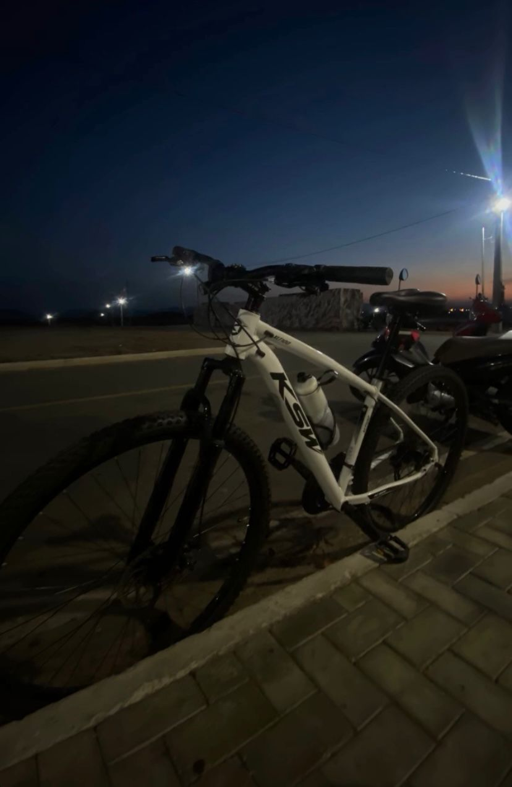
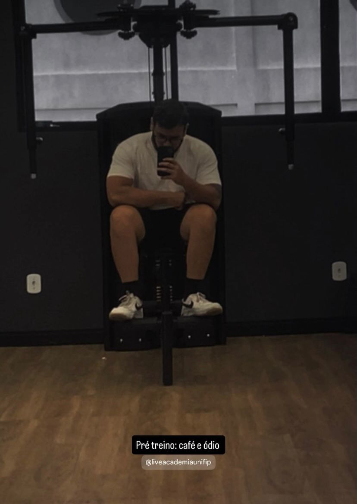
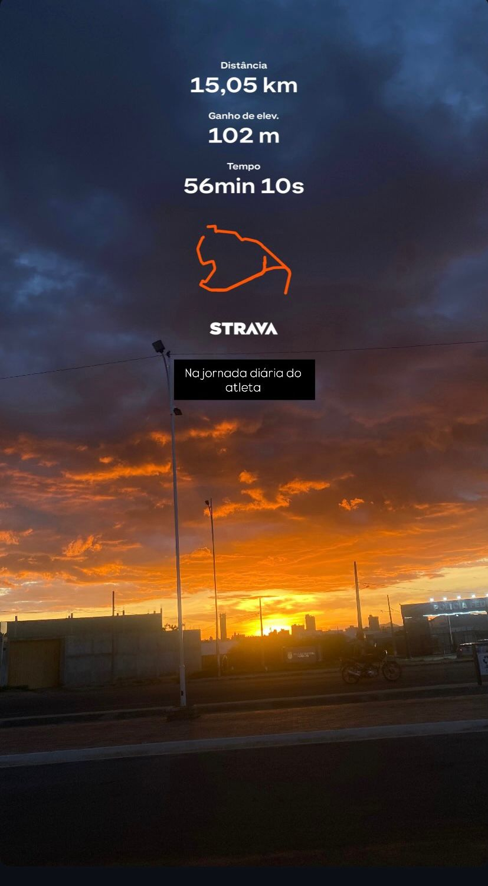
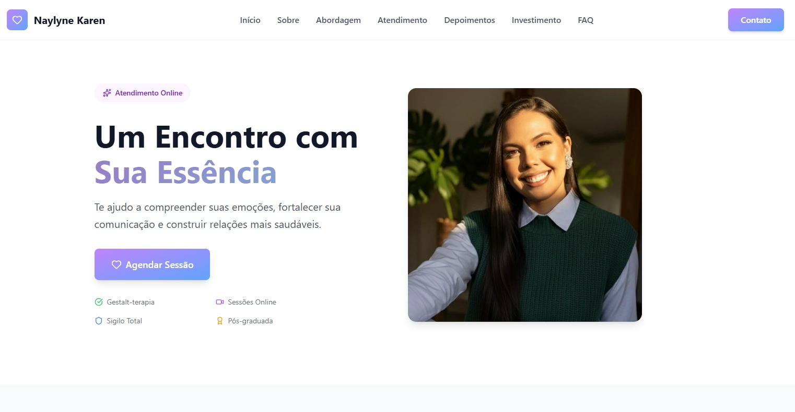

Transformo ideias em código, dou voz à música e encontro equilíbrio no esporte. Cada projeto é uma nova melodia, cada linha de código um passo mais perto do objetivo.
Meu nome é Anderson Silva, tenho 27 anos e sou Web Designer e desenvolvedor. Trabalho na interseção entre design e código para criar sites que não apenas impressionam, mas geram resultados reais para negócios.
No meu processo, utilizo Figma para prototipar cada detalhe antes de desenvolver — garantindo que a experiência do usuário seja fluida, estratégica e alinhada aos seus objetivos.
Fora do trabalho, você me encontra com uma guitarra na mão, explorando novos acordes, ou pedalando por aí. A música e o esporte são meu combustível para manter a criatividade e o foco. Já participei de algumas corridas de rua e até gravei covers no meu quarto — quem sabe um dia lanço algo oficial?

📸 2025
📸 2026
📸 16kmarquivo pessoal • fotos aleatórias da vida
Entendo seu negócio, seu público e o que você precisa alcançar.
Crio o design no Figma com foco em experiência e conversão.
Desenvolvo um site rápido, responsivo e pronto para uso.
Páginas focadas em atrair clientes e gerar conversão direta.
Presença profissional para empresas que querem crescer.
Transformo sites antigos em experiências modernas.
Interfaces pensadas para facilitar a vida do usuário.
horas estudadas
cafés tomados
projetos imaginados
músicas ouvidas
* números atualizados em tempo real (mais ou menos)
JavaScript • React • Python • Django • UX/UI • Figma • Tailwind • Git

Landing page profissional desenvolvida para psicóloga, com foco em transmitir confiança, acolhimento e facilitar o contato de novos pacientes.
aprendendo: solo de "Hotel California"
riff favorito: "Sweet Child o' Mine" (em progresso...)
meta do mês: 100km
já pedalei 60km • corrida 5km em 48min
supino: 80kg • agachamento: 100kg
desafio pessoal: 80 flexões seguidas (hoje: 30)
* resultados podem variar conforme a empolgação
Me conta sobre seu projeto e eu te mostro o melhor caminho.
Falar comigo